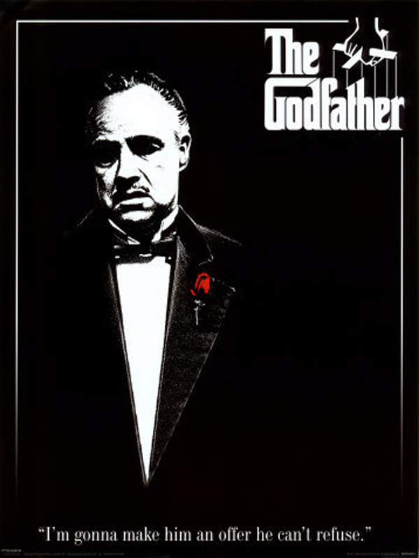

|
1. Esaretin BedeliVizyon tarihi : belirsiz (2s 20dk) Yönetmen : Frank Darabont Oyuncular : Tim Robbins,Morgan Freeman Tür : Dram Esaretin Bedeli, Andy ve Red isimli iki mahkumun parmaklıklar ardında kurdukları dünyanın hikayesini anlatıyor. Andy Dufresne, genç ve başarılı bir... |
Tüm Zamanların En İyi Filmleri

|
2. Hababam SınıfıVizyon tarihi : belirsiz (1s 30dk) Yönetmen : Ertem Eğilmez Oyuncular : Münir Özkul,Tarık Akan Tür : Dramatik Komedi Öğrencilik hayatları haylazlık ve tembellik üzerine kurulu olan bir sınıf dolusu matrak öğrencinin, Özel Çamlıca Lisesi’nde yaşadığı yer yer... |
|  |
3. BabaVizyon tarihi : belirsiz (2s 55dk) Yönetmen : Francis Ford Coppola Oyuncular : Marlon Brando,Al Paçino Tür : Polisiye,Dram Baba, 40’lar ve 50’lerin Amerika’sında, bir İtalyan mafya ailesinin destansı öyküsünü konu alıyor. Don Corleone’nin kızı Connie’nin düğününde,... |